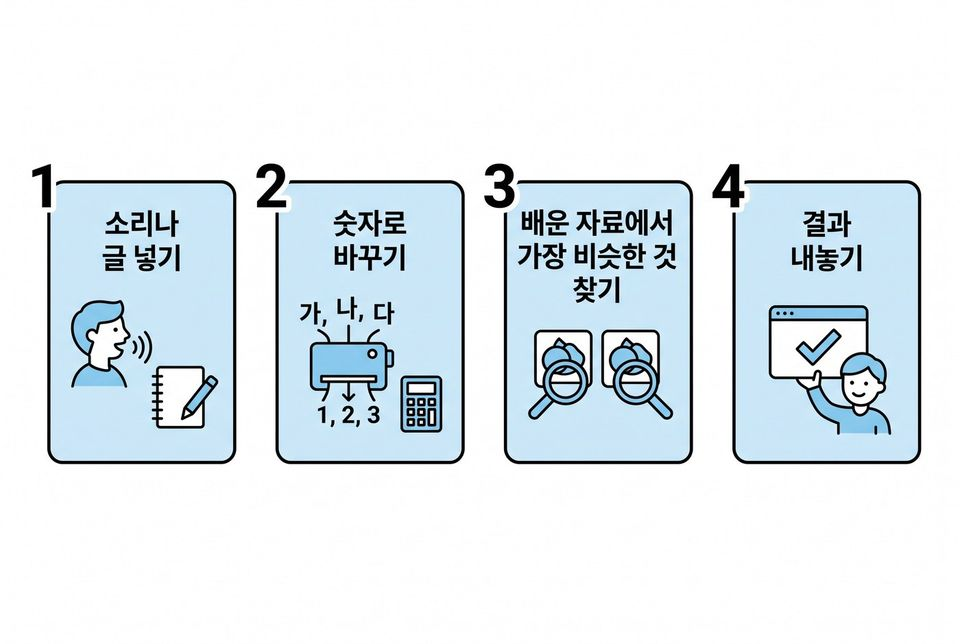
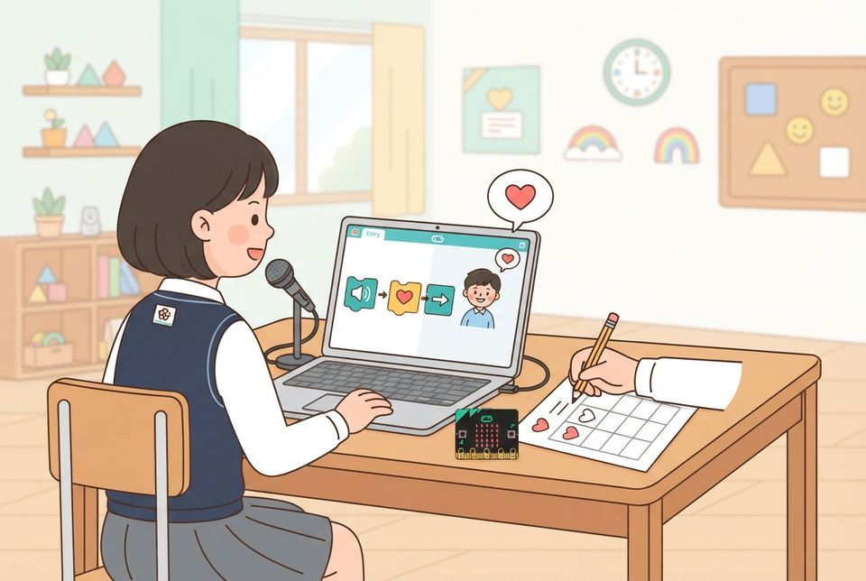
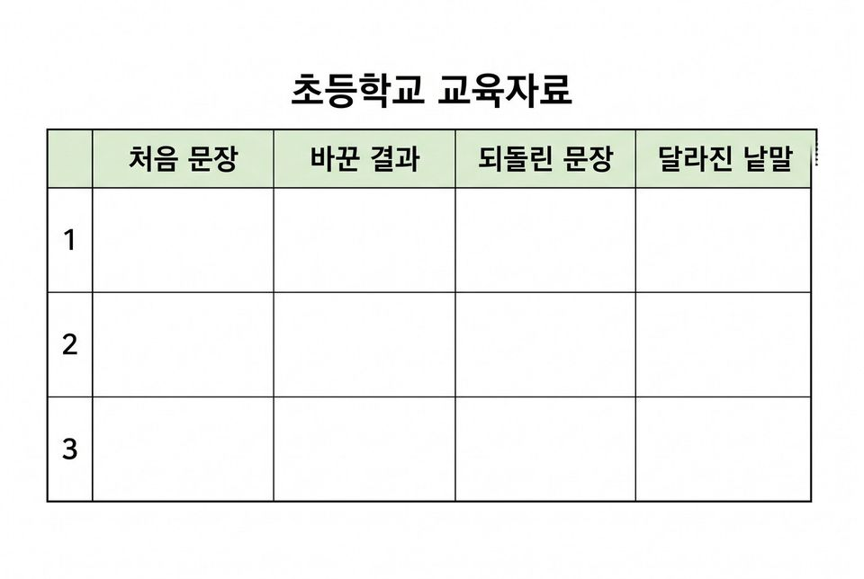
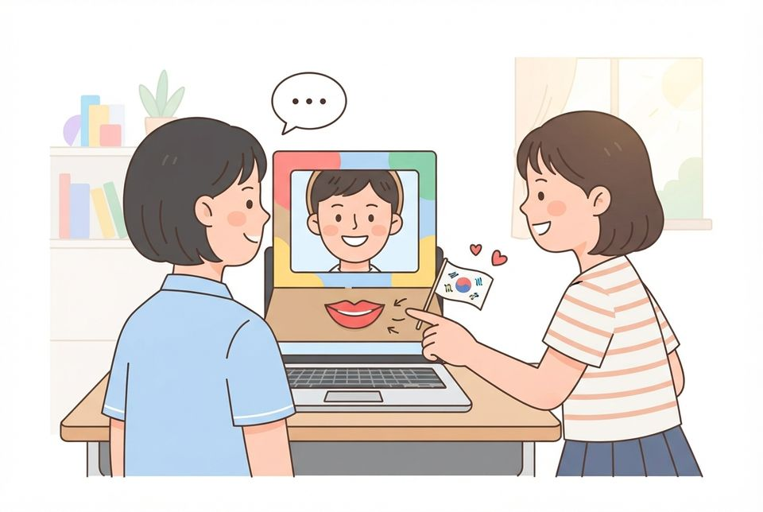

6학년 7~8차시 사람과 대화하는 인공지능 [6실인공지능02-01]
엔트리 통역 도우미를 만들며 말과 글이 처리되는 네 단계를 짚고 달라진 곳 찾기
학습 문제 — 말과 글이 글자 결과로 나오기까지의 네 단계를 짚고, 엔트리 통역 도우미를 만들며 결과가 달라지는 곳을 찾아봅시다.
개요
| 성취기준 | [6실인공지능02-01] 대화형 인공지능을 체험하며 말과 글이 처리되는 단계를 설명하고, 챗봇의 답을 근거 자료로 확인한다. 연계 성취기준: [6실05-04] |
|---|---|
| 핵심 역량 | 지식정보처리 역량, 공동체 역량 |
| 핵심 기능 | ① 데이터 간에 공통되는 유형이나 형태 탐색하기 ② 인공지능이 만들어지는 과정 탐색하기 ③ 말과 글이 처리되는 네 단계 짚기 ④ 음성 인식·번역·읽어주기 블록으로 통역 도우미 만들기 ⑤ 결과가 달라진 단계를 지목하고 사용 규칙 정하기 |
| 가치 태도 | 인공지능이 사회에 미치는 영향을 파악하는 자세 기능이 내놓은 결과를 사람이 다시 확인하려는 자세 |
교수학습 활동
7차시 도입 동기 유발 · 학습문제 제시7차시 전개 활동1. 네 단계 릴레이 놀이 · 활동2. 엔트리 받아쓰기 비서 만들기8차시 전개 활동3. 번역 되돌리기 실험하기 · 활동4. 우리 학교 통역 도우미 완성하기8차시 정리 배운 내용 정리 및 의뢰 해결 보고 · 다음 의뢰 예고
7차시도입8분
동기 유발
- 교사 기기의 음성 비서(스마트폰·스마트 스피커) 시연 보기
- 학생 두세 명이 준비된 질문(오늘 날씨·시간)을 말하고 답 듣기
- 엉뚱한 답이 나온 때가 있었는지 이야기 나누기
- 5학년 담임 선생님의 의뢰 듣기: 전학 온 친구에게 학교를 안내할 통역 도우미
- 오늘 미션: 말을 글자로 바꾸고 번역해 읽어 주는 도우미 만들어 전달하기

학습문제 제시
- 말과 글이 글자 결과로 나오기까지의 네 단계를 짚고, 엔트리 통역 도우미를 만들며 결과가 달라지는 곳을 찾아봅시다.
준비물필기구
자료네 단계 활동지, 의뢰 편지, [도입] 상황 그림, 교사 기기(음성 비서)
유의점음성 비서는 교사 기기로만 시연·체험하고, 이름·주소 같은 개인정보는 묻지 않는다.
유의점‘알아듣는다’는 학생 답을 고쳐 주지 말고 그대로 판서해 둔다.
유의점활동지 배부 시간을 도입 시간에 포함한다.
7차시전개32분
활동1. 네 단계 릴레이 놀이 (12분)
- 네 단계 카드를 ‘소리 넣기’부터 ‘결과 내놓기’까지 차례로 읽기
- 모둠 네 명이 귀·숫자 바꾸기·비슷한 것 찾기·입 역할 나누기
- 귀가 소리 카드를 뽑아 넘기면 숫자 바꾸기가 카드의 숫자를 적어 넘기기
- 비슷한 것 찾기는 규칙표에서 차이가 가장 작은 줄의 글자 고르기
- 입이 결과를 말하고 역할을 바꾸어 두 판 하기
- 자기가 맡은 일이 네 단계 가운데 몇 번인지 적기

활동2. 엔트리 받아쓰기 비서 만들기 (20분)
- 인공지능 블록 불러오기에서 오디오 감지와 읽어주기 추가하기
- 음성 인식 블록 → 인식한 글자 말하기 → 인식한 글자 읽어 주고 기다리기 순으로 잇기
- 정해진 세 문장만 읽고 화면 글자를 그대로 옮겨 적기
- 처음 문장과 다른 곳에 밑줄 긋고 첫 문장을 한 번 더 읽기
- 결과가 달라진 문장에서 한 단계만 골라 지목하기
- 그렇게 본 근거를 한 문장 이상 적기

준비물필기구, 소리 카드 묶음, 역할 이름표
자료네 단계 활동지, 학급 공용 기기(마이크), 엔트리
유의점목소리는 녹음하지 않고 화면 글자만 옮겨 적은 뒤 지우며, 이름·주소·친구 이야기는 읽지 않게 한다.
유의점수업 전 엔트리의 실제 블록·메뉴 이름을 확인한다.
유의점기기나 인터넷이 안 되면 소리 카드를 한 묶음 더 써서 대신한다.
유의점조립이 어려운 학생에게는 뼈대 작품을 주고, 빨리 끝낸 학생은 읽어주기 속도 값을 바꾸어 보게 한다.
8차시전개33분
활동3. 번역 되돌리기 실험하기 (15분)
- 시험 문장 세 개(높임말·우리 지역 말·보통 문장)가 어떻게 다른지 말하기
- 바꿀 말을 반 전체가 같은 한 가지(예: 영어)로 정하기
- 번역 블록으로 한국어 문장을 영어로 바꾸어 말하게 하고 그 글자 옮겨 적기
- 그 영어 문장을 다시 한국어로 번역해 되돌린 문장 적기
- 되돌린 문장에서 달라진 낱말에 동그라미 치기
- 짝과 기록표를 맞대어 다른 곳을 아래 칸에 적기

활동4. 우리 학교 통역 도우미 완성하기 (18분)
- 보건실·도서관·급식실 안내 문장 가운데 하나 고르기
- 오브젝트를 클릭하면 번역한 문장을 말하고 읽어 주는 언어 단추 만들기
- 기본은 언어 단추 한 개, 도전은 세 개 만들기
- 선택 도전(웹캠): 얼굴을 알아보면 ‘안녕하세요, Hello’로 인사한 뒤 음성 인식 시작하기
- 도우미 얼굴 틀의 스피커 자리에 입을 붙이고 언어 단추 안내 깃발 달기
- 가장 많이 달라진 문장에서 한 단계 지목하기
- 높임말과 지역 말이 사라진 까닭을 배운 자료와 이어 쓰기
- 사용 규칙 세 줄 쓰기: 그대로 써도 될 때·사람이 다시 확인할 때·넣지 않을 내용
- 개발 일지에 고친 점 한 줄 적기
- 화면에 남은 글을 지우고 기기 끄기

준비물도우미 얼굴 틀, 색지, 빨대 깃발대, 테이프
자료번역 기록 활동지, 되돌리기 기록표, 학급 공용 기기
유의점규칙을 ‘쓰면 안 된다’로 끝내지 않고 ‘언제 사람이 다시 확인할지’로 쓰게 한다.
유의점번역 결과는 그 언어를 아는 사람이 확인하기 전까지 실제 안내문으로 붙이지 않는다.
유의점이주배경 학생에게 발표를 강요하지 않고, 결과 차이는 언어의 우열이 아닌 배운 자료의 차이로 설명한다.
유의점웹캠 도전은 원하는 모둠만 하고, 화면을 저장하지 않으며 원하지 않는 학생은 손으로 대신한다.
유의점입 모양이 스피커 구멍을 막지 않게 한다.
8차시정리7분
배운 내용 정리 및 의뢰 해결 보고 (5분)
- 짝의 통역 도우미를 눌러 보고 잘 쓴 사용 규칙에 칭찬 붙임쪽지 붙이기
- ‘컴퓨터가 말을 알아듣는다’를 네 단계로 풀어 쓰기
- 담임 선생님께 드릴 보고 쓰기: 결과가 이상했던 문장과 단계, 사람이 확인할 점
다음 의뢰 예고 (2분)
- 교감 선생님의 의뢰 알기: 학교 안내 챗봇의 답을 확인하고 좋은 질문 만들기
- 활동지 두 장을 정리해 제출하기
자료번역 기록 활동지, 붙임쪽지
유의점쓰기가 어려운 학생은 말로 확인하고 도운 사실을 적는다.
유의점기기 화면에 남은 내용이 없는지 교사가 마지막에 확인한다.
평가 계획
인공지능 소양 · 말과 글이 처리되는 네 단계의 이해와 결과가 달라진 지점의 확인
말과 글이 글자 결과로 나오는 네 단계를 순서대로 짚고, 통역 도우미를 만들어 시험하며 결과가 달라진 곳이 어느 단계인지 근거를 들어 설명할 수 있는가?
| 수준 | 평가 기준 |
|---|---|
| 매우 잘함 | 네 단계를 순서대로 짚고 각 단계에서 하는 일을 자기 말로 설명한다. 받아쓰기 비서와 통역 도우미를 실행해 받아쓰기 기록표와 되돌리기 기록표를 빠짐없이 채우고, 달라진 곳에서 한 단계를 지목해 그 근거를 자기 기록에서 끌어와 설명한다. 사용 규칙 세 줄을 자기 관찰과 이어 쓴다. |
| 잘함 | 네 단계를 순서대로 짚고, 받아쓰기 비서나 통역 도우미를 실행해 두 기록표를 채우며 처음 문장과 달라진 곳을 찾는다. 한 단계를 지목하고 근거를 한 문장으로 쓴다. |
| 보통 | 네 단계는 짚으나 각 단계에서 하는 일의 설명이 짧다. 기록표 일부가 비었거나, 달라진 곳만 적고 단계를 지목한 근거가 없다. |
| 노력요함 | 교사가 카드를 한 장씩 짚어 주고 문장을 읽어 준 뒤에도 단계 순서를 말하거나 기록표에서 달라진 곳을 찾는 데 어려움이 있다. |
| 미관찰 | 결석이나 미제출, 기기 장애로 확인하지 못한 경우. 낮은 성취로 적지 않고 따로 기록한 뒤 보충 확인 시점을 정한다. |
평가 방법 활동지 분석 · 작품 시연 확인 · 구술 확인 · 관찰
연동 도구·링크
과정안에 나오는 도구가 저절로 걸립니다. 수업 전에 학교망에서 열리는지, 블록·메뉴 이름이 바뀌지 않았는지 확인하세요.
엔트리 ↗블록 코딩, 인공지능 블록, 데이터 분석(테이블·차트)계정: 학생 계정 없이 만들기 화면 사용 가능(저장은 교사 계정)엔트리 사용 설명서 ↗엔트리 안내엔트리 음성 인식 ↗말을 글자로 바꾸기계정: 엔트리와 같음엔트리 번역·읽어주기 ↗번역, 글을 소리로 읽기계정: 엔트리와 같음읽어주기 블록 ↗엔트리 번역·읽어주기 안내
내 수업 링크
학급 패들렛, 엔트리 작품, 활동지 주소처럼 이 차시에 쓸 링크를 걸어 둡니다. 이 브라우저에만 저장되고 밖으로 보내지 않습니다. 학생 이름이 든 주소는 넣지 마세요.